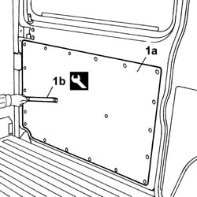
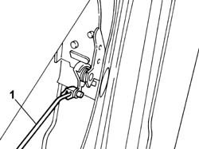
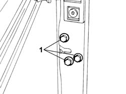

7020D10 SLIDING DOOR LOCK - R+R OR REPAIR
- Path
- Procedures > 70 FITTINGS > 7020 LOAD COMPARTMENT DOORS > 7020D SLIDING DOOR CLOSURE DEVICES > 7020D10 SLIDING DOOR LOCK - R+R OR REPAIR
- Kind
- repair procedure (removal / refitting; the operation number is the code)
- Applies to
- all engines; all production periods
- Interactive page
- https://sloeber94.github.io/elrnDB-fDct/en/#/244001468
Applies to: all engines; all production periods
 Removing
Removing
 Refitting
Refitting- Disconnect the negative battery terminal.
 | Description | Connector |
|---|---|---|
. | Battery | A001B |
1. Using the tool (1b), separate the tailgate lining panel (1a) working on the retaining springs along the entire perimeter.
 | Description | Code | Function |
|---|---|---|---|
1b | Knife | 1.878.077.000 | Remove springs |

Applies to: all engines; all production periods
- Disconnect the electrical connector.
| Description | Connector |
|---|---|---|
. | Right rear/sliding side door button coupling | D173 |
1. Release the tailgate opening control rod from the lock.

Applies to: all engines; all production periods
1. Undo the bolts fixing the lock to the tailgate.

Applies to: all engines; all production periods
- Remove the lock.
Applies to: all engines; all production periods
Refitting
Removing- Place the lock on the door positioning the tailgate opening control rod.
- Fasten the lock tightening the bolts to the recommended torque.
 | Value - daNm | Fastening | Component | Ø |
|---|---|---|---|---|
. | 1,5 | Bolt | SLIDING DOOR LOCK | M8 |
- Connect the electrical connector.
| Description | Connector |
|---|---|---|
. | Right rear/sliding side door button coupling | D173 |
- Position the panel and secure it attaching the retaining springs.
- Connect the negative battery terminal.
| Description | Connector |
|---|---|---|
. | Battery | A001B |